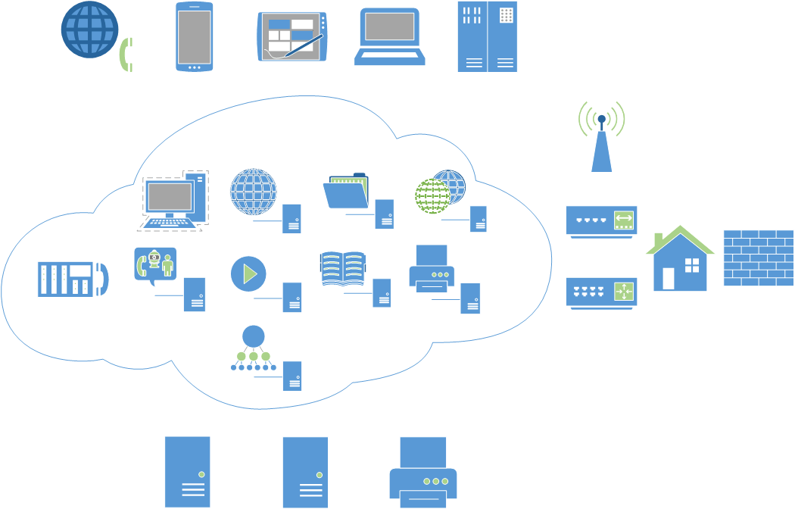

实践 构建先进的家居云¶
鉴于计算能力的摩尔定律以及家庭联网功能设备的爆发式增长，我们可以制造建立于各个家庭上的“云团”。
先进性体现在哪呢？
首先，我们的服务主要依托于虚拟化，数据流一定是SSL加密的，最大程度地与现有设备交互，服务可以对外限量使用。
系统架构¶
架构这个东西从来就没离开过需求，那我们的需求是什么呢？
- 你是否有过文件无处安放的苦恼，装进电脑里怕系统重装后弄丢，装进移动存储怕插坏？
- 你是否有一些本地照片、音乐、视频要给家人分享？
- 你是否有一些本地照片、音乐、视频要给网络上的好友分享？
- 你是否有一些重要文档，想要的时候却总也找不到？
- 你是不是考虑过品牌家用NAS？
- 你是不是不放心市场上的智能家居设备，担心它们窥探隐私（后门、被入侵）？
- 你是否觉得让现有的家庭设备智能化很容易，但是自己没时间做？
- 你是不是炒股？你的信息来源是不是非常分散？
- 机器太多，怎么监控？
- OK，我在扯淡。。
OK，这些我们都可以分而治之，整个系统的骨架大概如下图所示。
构建元素¶
硬件： HP N54L 、 Raspberry Pi 、 Mac mini 、 电话语音卡 、 WRT54G（可选）
服务：网络认证、XMPP即时通信（服务群成员）、云存储、家庭知识库、家庭影像库、NAS（Apple TM兼容）、数据源（微博等）、DNS（解析内部服务器）、语音电话、语音识别控制、股票分析、clamav（防病毒）、zabbix监控
软件：OpenLDAP、jabber、 、 Seafile 、 owncloud 、 XBMC（更名Kodi） 、Wiki、Asterisk、 jasper 、 Hadoop 、 clamav 、 AirPlay(Linux/OSX Server)
注解
不需要的东西
建立一个搜索引擎就三步：下载网页、建立索引、质量排序，对的，我们不需要自己建立，主要原因就是索引量太小。有兴趣的话可以查看 http://en.wikipedia.org/wiki/List_of_search_engines ，或者使用Nutch、Lucene或者Sphinx来搭建自己的搜索引擎。
OS X Server¶
鉴于OS X Server安装服务非常方便，这里就针对它的常用服务进行讲解。
- Time Machine： 给Mac机器提供时光机器服务，可以很方便地对Mac进行备份与恢复，一定要保证磁盘划分合理。
- VPN：可以创建基于LT2P或者PPTP的VPN服务器。
- 信息：提供基于XMPP的Jabber即时消息服务。
- Wiki：可以创建博客以及Wiki服务器。
- 网站：可提供PHP或者Python的Web服务。 OS X有一个 webpromotion 命令，用于更改桌面配置，以优化web服务体验。
- 文件共享：可以通过Samba、AFP、Webdav方式共享文件或目录。
- FTP：提供FTP服务。
- 通讯录：可提供CardDav格式或者LDAP内的通讯录，适用于大多数移动设备。
- NetInstall：提供网络安装OS X的服务，一般用于重装或者恢复系统。
- Open Directory：提供LDAP服务，包含Kerberos认证。
- DNS：用于内部DNS服务。